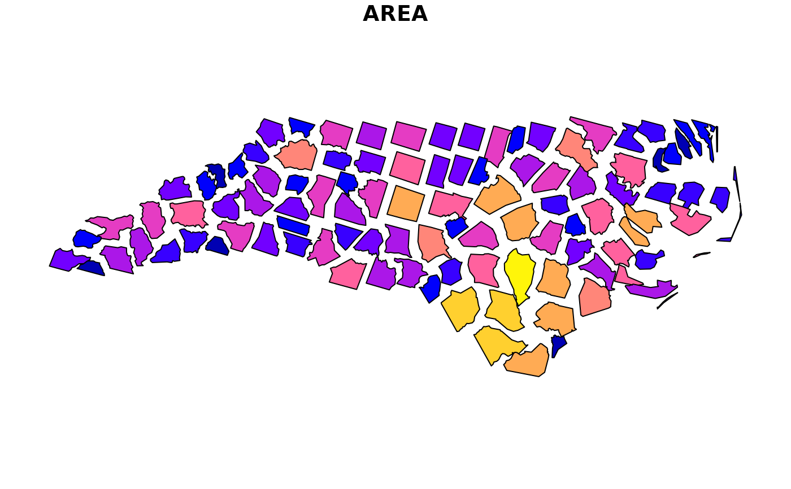

Scale and rotate a simple feature object, simple feature collection, or bounding box
Source:R/st_scale_rotate.R
st_scale_rotate.RdScale or rotate a simple feature or bounding box object using affine transformations.
Arguments
- x
A
sf,sfc, orbboxobject or another object coercible to a simple feature collection withas_sfc().- scale
numeric; scale factor, Default: 1
- rotate
numeric; degrees to rotate (-360 to 360), Default: 0
- call
The execution environment of a currently running function, e.g.
caller_env(). The function will be mentioned in error messages as the source of the error. See thecallargument ofabort()for more information.
Examples
nc <- sf::read_sf(system.file("shape/nc.shp", package = "sf"))
nc <- sf::st_transform(nc, crs = 3857)
plot(st_scale_rotate(nc, scale = 0.75, rotate = 15), max.plot = 1)
